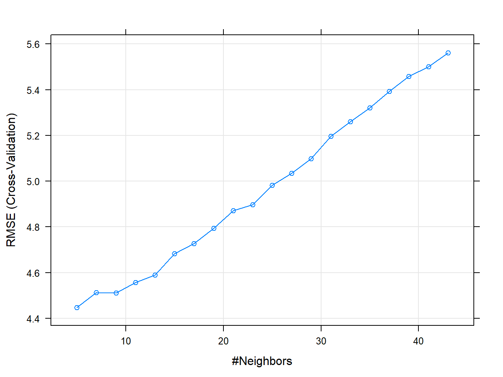

2 K - Vecinos más Próximos
Comenzamos con uno de los algoritmos más sencillos e intuitivos para regresión y clasificación: los K - Vecinos Más Próximos (KNN: K-Nearest Neighbors). Nuestro bautizo será con un problema de clasificación, empleando los paquetes class y caret. Luego, pasaremos a un problema sencillo de regresión, esta vez usando solo el paquete caret. Trataremos los problemas de ajuste y validación del modelo, usando técnicas de remuestreo.
2.1 Clasificación con el paquete class
El problema inicial está relacionado con la clasificación de la especie de flor Iris—setosa, virginica y versicolor—a partir de mediciones sus pétalos y sépalos. Estos datos fueron recogidos por Ronald Fisher con el objetivo de cuantificar la variación morfológica de la flor. Actualmente están disponibles en diversas plataformas. En R es uno de los datos que vienen de base (iris).
En la Tabla 2.1 representamos una muestra del dataset, que en su totalidad consiste de 50 observaciones de cada una de las 3 especies. Como todo estudio, debemos comenzar por un análisis descriptivo de la muestra.
| Sepal.Length | Sepal.Width | Petal.Length | Petal.Width | Species |
|---|---|---|---|---|
| 5.1 | 3.5 | 1.4 | 0.2 | setosa |
| 4.9 | 3.0 | 1.4 | 0.2 | setosa |
| 4.7 | 3.2 | 1.3 | 0.2 | setosa |
| 4.6 | 3.1 | 1.5 | 0.2 | setosa |
| 5.0 | 3.6 | 1.4 | 0.2 | setosa |
| 5.4 | 3.9 | 1.7 | 0.4 | setosa |
| 4.6 | 3.4 | 1.4 | 0.3 | setosa |
| 5.0 | 3.4 | 1.5 | 0.2 | setosa |
| 4.4 | 2.9 | 1.4 | 0.2 | setosa |
| 4.9 | 3.1 | 1.5 | 0.1 | setosa |
Cargamos las librerías necesarias para llevar a cabo el estudio. Luego inspeccionamos los datos.
library(class)
library(ggplot2)
library(GGally)
df <- data(iris) # cargar datos
summary(iris) # un breve descriptivo## Sepal.Length Sepal.Width Petal.Length Petal.Width
## Min. :4.300 Min. :2.000 Min. :1.000 Min. :0.100
## 1st Qu.:5.100 1st Qu.:2.800 1st Qu.:1.600 1st Qu.:0.300
## Median :5.800 Median :3.000 Median :4.350 Median :1.300
## Mean :5.843 Mean :3.057 Mean :3.758 Mean :1.199
## 3rd Qu.:6.400 3rd Qu.:3.300 3rd Qu.:5.100 3rd Qu.:1.800
## Max. :7.900 Max. :4.400 Max. :6.900 Max. :2.500
## Species
## setosa :50
## versicolor:50
## virginica :50
##
##
## ##
## setosa versicolor virginica
## 0.3333333 0.3333333 0.3333333# visualización
ggpairs(iris, ggplot2::aes(colour = Species, alpha = 0.2), lower=list(combo=wrap("facethist",
bins=round(sqrt(50))))) + theme_light()
De estos análisis observamos, por ejemplo, que 2 de las 4 variables—Petal.Width y Petal.Length—parecen separar bastante bien las 3 especies, y que la muestra está muy bien balanceada.
Antes de pasar a ajustar nuestro modelo, debemos preprocesar la muestra. El algoritmo KNN es muy sensible a la escala de los datos, por ejemplo, podría favorecer distancias entre elementos con valores más grandes. Una forma sencilla de estandarizar o escalar los datos es usando:
Otro elemento importante es la validación del modelo que ajustemos: ¿cómo y con qué muestra medir la precisión? Por lo pronto, fijaremos aleatoriamente un 20% de los datos para calcular la tasa de error.
# set de índices para entrenar-validar (80% - 20%)
set.seed(123)
train.ID <- sample(1:nrow(iris), 0.8 * nrow(iris))
# matriz de diseño para entrenar
X.train <- iris.scl[train.ID,1:4]
# matriz de diseño para testear
X.test <- iris.scl[-train.ID,1:4]
# respuesta (categórica) entrenamiento
Y <- iris[train.ID,5]
# respuesta (categórica) test
Y.test <- iris[-train.ID,5]Usando la función knn podemos predecir las clases de los datos en X.test. Otro problema es cómo seleccionar la cantidad de vecinos k apropiada. Una regla de pulgar (thumb rule) es fijar \(k = \sqrt{n_{train}}\). Para analizar la precisión del modelo creamos la matriz de confusión y calculamos la tasa de error correspondiente para el conjunto de datos test.
# KNN
pr <- knn(X.train, X.test, cl=Y, k = round(sqrt(nrow(X.train))))
# matriz de confusión
tab <- table(pr,Y.test)| setosa | versicolor | virginica | |
|---|---|---|---|
| setosa | 10 | 0 | 0 |
| versicolor | 0 | 14 | 0 |
| virginica | 0 | 1 | 5 |
## [1] 0.03333333La tasa de error test es bastante baja, además indica que se clasifican bien el \(\approx 97\%\) de las observaciones. Veamos ahora qué pasa al variar el número de vecinos K.
test.error <- data.frame()
for (K in seq(1, 120, by = 5)) {
# KNN
pr <- knn(X.train,X.test,cl=Y,k=K)
# matriz de confusion
tab <- table(pr,Y.test)
# tasa de error test
test.error <- rbind(test.error,
data.frame(Tasa.Error = sum(pr != Y.test)/sum(tab), K))
}
ggplot(test.error, aes(x = K, y = Tasa.Error)) +
geom_point() +
geom_line() +
ylab("Tasa de Error (test)") + xlab("K: número de vecinos") +
theme_light()
Se representa la tasa de error al aumentar el número de vecinos. Los saltos de la curva son resultado del pequeño tamaño de la muestra test. Como cualquier otro modelo de machine learning, el interés está en seleccionar el nivel de flexibilidad (número de vecinos) que mejore la clasificación… inténtalo!
2.2 El paquete caret
El paquete caret (Classification And REgression Training) es uno de los más populares para entrenar modelos de machine learning. Contiene una interface uniforme para la mayoría de los algoritmos que se tratan en este curso y, en particular, los 3 que veremos en estas sesiones. Las ventajas del paquete son que permite hacer:
- partición de los datos
- pre-procesado de los datos
- selección de variables
- ajuste del modelo usando remuestreo
- estimación de la importancia/relevancia de las variables
Más información disponible en topepo.github.io/caret.
2.2.1 Visualización
Seguiremos con los datos iris. El paso inicial: análisis descriptivo y visualización de los datos podríamos obviarlo… pero a modo didáctico reproducimos el mismo análisis, esta vez usando la función featurePlot de caret.
## Loading required package: lattice## 'data.frame': 150 obs. of 5 variables:
## $ Sepal.Length: num 5.1 4.9 4.7 4.6 5 5.4 4.6 5 4.4 4.9 ...
## $ Sepal.Width : num 3.5 3 3.2 3.1 3.6 3.9 3.4 3.4 2.9 3.1 ...
## $ Petal.Length: num 1.4 1.4 1.3 1.5 1.4 1.7 1.4 1.5 1.4 1.5 ...
## $ Petal.Width : num 0.2 0.2 0.2 0.2 0.2 0.4 0.3 0.2 0.2 0.1 ...
## $ Species : Factor w/ 3 levels "setosa","versicolor",..: 1 1 1 1 1 1 1 1 1 1 ...Diagramas de dispersión:
featurePlot(x = iris[, 1:4],
y = iris$Species,
plot = "pairs",
## Add a key at the top
auto.key = list(columns = 3))
Densidades estimadas:
featurePlot(x = iris[, 1:4],
y = iris$Species,
plot = "density",
## Pass in options to xyplot() to
## make it prettier
scales = list(x = list(relation="free"),
y = list(relation="free")),
adjust = 1.5,
pch = "|",
layout = c(4, 1),
auto.key = list(columns = 3))
Diagramas de cajas:
2.2.2 Clasificación con KNN
Necesitamos extraer una muestra independiente (test) para probar el modelo, una vez ajustado. Ahora usaremos la función createDataPartition, que permite hacer la partición teniendo en cuenta la variable respuesta. Esto es esencial para mantener el balance de la muestra.
# creamos una partición test
df <- iris
set.seed(123)
train.ID <- createDataPartition(df$Species, p = 0.8, list = FALSE)
train_df <- df[train.ID, ]
test_df <- df[-train.ID, ]Para ajustar el modelo usaremos la función train, que permite:
* evaluar, usando remuestreo, el efecto de distintos parámetros en la precisión del modelo
* escoger el modelo óptimo, de acuerdo a los parámetros probados
* estimar la precisión del modelo, de acuerdo a diferentes medidas
Actualmente hay uno \(\approx 238\) modelos disponibles. Nosotros empezaremos probando el knn, pero antes tenemos que especificar el método de remuestreo, usando la función trainControl. Con esta función, podemos fijar una validación cruzada k-Fold o leave-one-out (LOOCV). También están disponibles las opciones bootstrap y k-Fold repetitivo.
En este ejemplo, hemos fijado un k-Fold con 10 hojas. Además, hacemos el escalado de las variables dentro del propio algoritmo, usando la opción preProcess. Finalmente, le decimos al algoritmo que intente 10 valores diferentes para escoger el número de vecinos óptimo, usando la opción tuneLength
# primeros pasos con la validación cruzada...
fit_control <- trainControl(method='cv', number = 10)
model_knn_iris <- train(Species ~.,
data = train_df,
method = "knn",
trControl = fit_control,
preProcess = c("center", "scale"),
tuneLength = 10)
model_knn_iris## k-Nearest Neighbors
##
## 120 samples
## 4 predictor
## 3 classes: 'setosa', 'versicolor', 'virginica'
##
## Pre-processing: centered (4), scaled (4)
## Resampling: Cross-Validated (10 fold)
## Summary of sample sizes: 108, 108, 108, 108, 108, 108, ...
## Resampling results across tuning parameters:
##
## k Accuracy Kappa
## 5 0.9666667 0.9500
## 7 0.9583333 0.9375
## 9 0.9750000 0.9625
## 11 0.9583333 0.9375
## 13 0.9583333 0.9375
## 15 0.9583333 0.9375
## 17 0.9583333 0.9375
## 19 0.9416667 0.9125
## 21 0.9500000 0.9250
## 23 0.9333333 0.9000
##
## Accuracy was used to select the optimal model using the largest value.
## The final value used for the model was k = 9.
Podemos ver en el resumen el número óptimo de vecinos (entre los valores probados) del modelo final. En el gráfico, vemos cómo varía el accuracy en función del número de vecinos. La tabla de confusión y medidas de precisión para los datos test:
# hagamos las predicciones del conjunto de prueba
prediction_knn_iris <- predict(model_knn_iris, newdata = test_df)
confusionMatrix(prediction_knn_iris, reference = test_df$Species)## Confusion Matrix and Statistics
##
## Reference
## Prediction setosa versicolor virginica
## setosa 10 0 0
## versicolor 0 10 2
## virginica 0 0 8
##
## Overall Statistics
##
## Accuracy : 0.9333
## 95% CI : (0.7793, 0.9918)
## No Information Rate : 0.3333
## P-Value [Acc > NIR] : 8.747e-12
##
## Kappa : 0.9
##
## Mcnemar's Test P-Value : NA
##
## Statistics by Class:
##
## Class: setosa Class: versicolor Class: virginica
## Sensitivity 1.0000 1.0000 0.8000
## Specificity 1.0000 0.9000 1.0000
## Pos Pred Value 1.0000 0.8333 1.0000
## Neg Pred Value 1.0000 1.0000 0.9091
## Prevalence 0.3333 0.3333 0.3333
## Detection Rate 0.3333 0.3333 0.2667
## Detection Prevalence 0.3333 0.4000 0.2667
## Balanced Accuracy 1.0000 0.9500 0.9000Intentemos ahora fijar las cantidades de vecinos a probar. También cambiamos el método de remuestreo…
# definimos el grid:
some_k <- expand.grid(k = 1:15)
# k-fold CV pero con repeticiones
fit_control1 <- trainControl(
method = "repeatedcv",
number = 10, # número de folds
repeats = 5 ) # repeticiones
# bootstrap
fit_control2 <- trainControl(
method = "boot",
number = 10) # número de muestras bootstrap
# LOOCV
fit_control3 <- trainControl(
method = "LOOCV")
model2_knn_iris <- train(Species ~.,
data = train_df,
method = "knn",
trControl = fit_control2,
preProcess = c("center", "scale"),
tuneGrid = some_k)
model2_knn_iris## k-Nearest Neighbors
##
## 120 samples
## 4 predictor
## 3 classes: 'setosa', 'versicolor', 'virginica'
##
## Pre-processing: centered (4), scaled (4)
## Resampling: Bootstrapped (10 reps)
## Summary of sample sizes: 120, 120, 120, 120, 120, 120, ...
## Resampling results across tuning parameters:
##
## k Accuracy Kappa
## 1 0.9481717 0.9211545
## 2 0.9475159 0.9196833
## 3 0.9453882 0.9165257
## 4 0.9599231 0.9393154
## 5 0.9665503 0.9492382
## 6 0.9686637 0.9524826
## 7 0.9688968 0.9528083
## 8 0.9596084 0.9388259
## 9 0.9647549 0.9465745
## 10 0.9600366 0.9392605
## 11 0.9624756 0.9431153
## 12 0.9555270 0.9326274
## 13 0.9623479 0.9429620
## 14 0.9439143 0.9151811
## 15 0.9438559 0.9150458
##
## Accuracy was used to select the optimal model using the largest value.
## The final value used for the model was k = 7.
# hagamos las predicciones del conjunto de prueba
prediction_knn_iris2 <- predict(model2_knn_iris, newdata = test_df)
confusionMatrix(prediction_knn_iris2, reference = test_df$Species)## Confusion Matrix and Statistics
##
## Reference
## Prediction setosa versicolor virginica
## setosa 10 0 0
## versicolor 0 10 2
## virginica 0 0 8
##
## Overall Statistics
##
## Accuracy : 0.9333
## 95% CI : (0.7793, 0.9918)
## No Information Rate : 0.3333
## P-Value [Acc > NIR] : 8.747e-12
##
## Kappa : 0.9
##
## Mcnemar's Test P-Value : NA
##
## Statistics by Class:
##
## Class: setosa Class: versicolor Class: virginica
## Sensitivity 1.0000 1.0000 0.8000
## Specificity 1.0000 0.9000 1.0000
## Pos Pred Value 1.0000 0.8333 1.0000
## Neg Pred Value 1.0000 1.0000 0.9091
## Prevalence 0.3333 0.3333 0.3333
## Detection Rate 0.3333 0.3333 0.2667
## Detection Prevalence 0.3333 0.4000 0.2667
## Balanced Accuracy 1.0000 0.9500 0.90002.2.3 Importancia de las variables
Para KNN no tenemos un método que permita determinar la relevancia de cada predictor. Por ejemplo, en mínimos cuadrados, sí se puede conducir un test para determinar si cada coeficiente \(\beta_i\) del modelo es significativamente distinto de cero. Aún así, caret incorpora la función varImp que da una medida de importancia de cada predictor del problema de clasificación o regresión.
## ROC curve variable importance
##
## variables are sorted by maximum importance across the classes
## setosa versicolor virginica
## Petal.Width 100.00 100.00 100.0
## Petal.Length 100.00 100.00 100.0
## Sepal.Length 90.80 72.07 90.8
## Sepal.Width 56.32 56.32 0.0Aunque esto no debe usarse como método de selección de variables, sí motiva el estudio del problema al disminuir la dimensión \(p = 4\). Por ejemplo, veamos la precisión del modelo al dejar solo Petal.Length y Petal.Width.
# seleccionamos los predictores que queremos y la respuesta
df_petal <- iris[,c("Petal.Length", "Petal.Width", "Species")]
train_df_petal <- df_petal[train.ID, ]
test_df_petal <- df_petal[-train.ID, ]
# el modelo...
fit_control <- trainControl(method='cv', number = 10)
model_knn_petal <- train(Species ~.,
data = train_df_petal,
method = "knn",
trControl = fit_control,
preProcess = c("center", "scale"),
tuneLength = 20)
model_knn_petal## k-Nearest Neighbors
##
## 120 samples
## 2 predictor
## 3 classes: 'setosa', 'versicolor', 'virginica'
##
## Pre-processing: centered (2), scaled (2)
## Resampling: Cross-Validated (10 fold)
## Summary of sample sizes: 108, 108, 108, 108, 108, 108, ...
## Resampling results across tuning parameters:
##
## k Accuracy Kappa
## 5 0.9666667 0.9500
## 7 0.9666667 0.9500
## 9 0.9666667 0.9500
## 11 0.9666667 0.9500
## 13 0.9666667 0.9500
## 15 0.9666667 0.9500
## 17 0.9583333 0.9375
## 19 0.9666667 0.9500
## 21 0.9583333 0.9375
## 23 0.9666667 0.9500
## 25 0.9666667 0.9500
## 27 0.9666667 0.9500
## 29 0.9666667 0.9500
## 31 0.9666667 0.9500
## 33 0.9750000 0.9625
## 35 0.9833333 0.9750
## 37 0.9750000 0.9625
## 39 0.9833333 0.9750
## 41 0.9750000 0.9625
## 43 0.9666667 0.9500
##
## Accuracy was used to select the optimal model using the largest value.
## The final value used for the model was k = 39.
# hagamos las predicciones del conjunto de prueba
prediction_knn_petal <- predict(model_knn_petal, newdata = test_df_petal)
confusionMatrix(prediction_knn_petal, reference = test_df_petal$Species)## Confusion Matrix and Statistics
##
## Reference
## Prediction setosa versicolor virginica
## setosa 10 0 0
## versicolor 0 10 3
## virginica 0 0 7
##
## Overall Statistics
##
## Accuracy : 0.9
## 95% CI : (0.7347, 0.9789)
## No Information Rate : 0.3333
## P-Value [Acc > NIR] : 1.665e-10
##
## Kappa : 0.85
##
## Mcnemar's Test P-Value : NA
##
## Statistics by Class:
##
## Class: setosa Class: versicolor Class: virginica
## Sensitivity 1.0000 1.0000 0.7000
## Specificity 1.0000 0.8500 1.0000
## Pos Pred Value 1.0000 0.7692 1.0000
## Neg Pred Value 1.0000 1.0000 0.8696
## Prevalence 0.3333 0.3333 0.3333
## Detection Rate 0.3333 0.3333 0.2333
## Detection Prevalence 0.3333 0.4333 0.2333
## Balanced Accuracy 1.0000 0.9250 0.8500Pero, ¿cómo visualizar las fronteras de decisión del método? Ahora que \(p = 2\), podemos representar esto en el plano usando la siguiente función:
decision_bound = function(train_df_in, test_df_in, model_in){
# plot decision boundary for iris[,c("Petal.Length", "Petal.Width", "Species")]
require(MASS)
require(caret)
require(ggplot2)
require(gridExtra)
# Paso 1: crear un grid de valores desde min a max de ambos predictores
pl = seq(min(train_df_in$Petal.Length), max(train_df_in$Petal.Length), length.out = 80)
pw = seq(min(train_df_in$Petal.Width), max(train_df_in$Petal.Width), length.out = 80)
lgrid <- expand.grid(Petal.Length=pl, Petal.Width=pw)
# Paso 2: obtener las predicciones tanto para el grid como para el test
modelPredGrid <- predict(model_in, newdata=lgrid)
train_df_in$Pred.Class <- predict(model_in, newdata = train_df_in)
test_df_in$Pred.Class <- predict(model_in, newdata = test_df_in)
# Paso 3: ggplot con la funcion contour
gg1 <- ggplot(data=lgrid) +
stat_contour(aes(x=Petal.Length, y=Petal.Width, z=as.numeric(modelPredGrid)), bins=2) +
geom_point(aes(x=Petal.Length, y=Petal.Width, colour=modelPredGrid), alpha=0.1) +
labs(colour = "Clases") + ggtitle("Train") +
geom_point(data=train_df_in,
aes(x=Petal.Length, y=Petal.Width,
colour=Species), size=5, shape=1) +
theme_light()
gg2 <- ggplot(data=lgrid) +
stat_contour(aes(x=Petal.Length, y=Petal.Width, z=as.numeric(modelPredGrid)), bins=2) +
geom_point(aes(x=Petal.Length, y=Petal.Width, colour=modelPredGrid), alpha=0.1) +
labs(colour = "Clases") + ggtitle("Test") +
geom_point(data=test_df_in,
aes(x=Petal.Length, y=Petal.Width,
colour=Species), size=5, shape=1) +
theme_light()
grid.arrange(gg1, gg2, ncol=1, nrow=2)
}Así que aplicando esto a nuestros datos de entrenamiento (o los del test) obtenemos las fronteras de decisión:
# fronteras de decisión, usando la nueva función
decision_bound(train_df_petal, test_df_petal, model_knn_petal)## Loading required package: MASS## Loading required package: gridExtra
2.3 Regresión
Abordamos ahora el problema de regresión con KNN, o sea, la respuesta es cuantitativa-continua. Seguimos usando el paquete caret que tiene implementado el algoritmo y ofrece facilidades para el preprocesado de los datos y la validación del modelo.
Particularmente, atacaremos el problema de predecir el precio medio de las viviendas (medv) en los suburbios de Boston, usando otras 13 variables predictoras.
library(MASS)
library(caret)
library(ggplot2)
# cargar e inspeccionar los datos
# para detalles sobre las variables predictoras:
# ?Boston
data(Boston)
str(Boston)## 'data.frame': 506 obs. of 14 variables:
## $ crim : num 0.00632 0.02731 0.02729 0.03237 0.06905 ...
## $ zn : num 18 0 0 0 0 0 12.5 12.5 12.5 12.5 ...
## $ indus : num 2.31 7.07 7.07 2.18 2.18 2.18 7.87 7.87 7.87 7.87 ...
## $ chas : int 0 0 0 0 0 0 0 0 0 0 ...
## $ nox : num 0.538 0.469 0.469 0.458 0.458 0.458 0.524 0.524 0.524 0.524 ...
## $ rm : num 6.58 6.42 7.18 7 7.15 ...
## $ age : num 65.2 78.9 61.1 45.8 54.2 58.7 66.6 96.1 100 85.9 ...
## $ dis : num 4.09 4.97 4.97 6.06 6.06 ...
## $ rad : int 1 2 2 3 3 3 5 5 5 5 ...
## $ tax : num 296 242 242 222 222 222 311 311 311 311 ...
## $ ptratio: num 15.3 17.8 17.8 18.7 18.7 18.7 15.2 15.2 15.2 15.2 ...
## $ black : num 397 397 393 395 397 ...
## $ lstat : num 4.98 9.14 4.03 2.94 5.33 ...
## $ medv : num 24 21.6 34.7 33.4 36.2 28.7 22.9 27.1 16.5 18.9 ...## crim zn indus chas
## Min. : 0.00632 Min. : 0.00 Min. : 0.46 Min. :0.00000
## 1st Qu.: 0.08204 1st Qu.: 0.00 1st Qu.: 5.19 1st Qu.:0.00000
## Median : 0.25651 Median : 0.00 Median : 9.69 Median :0.00000
## Mean : 3.61352 Mean : 11.36 Mean :11.14 Mean :0.06917
## 3rd Qu.: 3.67708 3rd Qu.: 12.50 3rd Qu.:18.10 3rd Qu.:0.00000
## Max. :88.97620 Max. :100.00 Max. :27.74 Max. :1.00000
## nox rm age dis
## Min. :0.3850 Min. :3.561 Min. : 2.90 Min. : 1.130
## 1st Qu.:0.4490 1st Qu.:5.886 1st Qu.: 45.02 1st Qu.: 2.100
## Median :0.5380 Median :6.208 Median : 77.50 Median : 3.207
## Mean :0.5547 Mean :6.285 Mean : 68.57 Mean : 3.795
## 3rd Qu.:0.6240 3rd Qu.:6.623 3rd Qu.: 94.08 3rd Qu.: 5.188
## Max. :0.8710 Max. :8.780 Max. :100.00 Max. :12.127
## rad tax ptratio black
## Min. : 1.000 Min. :187.0 Min. :12.60 Min. : 0.32
## 1st Qu.: 4.000 1st Qu.:279.0 1st Qu.:17.40 1st Qu.:375.38
## Median : 5.000 Median :330.0 Median :19.05 Median :391.44
## Mean : 9.549 Mean :408.2 Mean :18.46 Mean :356.67
## 3rd Qu.:24.000 3rd Qu.:666.0 3rd Qu.:20.20 3rd Qu.:396.23
## Max. :24.000 Max. :711.0 Max. :22.00 Max. :396.90
## lstat medv
## Min. : 1.73 Min. : 5.00
## 1st Qu.: 6.95 1st Qu.:17.02
## Median :11.36 Median :21.20
## Mean :12.65 Mean :22.53
## 3rd Qu.:16.95 3rd Qu.:25.00
## Max. :37.97 Max. :50.00Veamos las relaciones entre predictores y la variable respuesta (en este ejemplo, solo hemos representado algunas).
# ver correlaciones y posibles relaciones:
# todos los predictores:
# ggpairs(Boston, ggplot2::aes(y = medv, alpha = 0.2)) + theme_light()
# algunos predictores:
ggpairs(Boston[, c("lstat", "age", "rad", "rm", "ptratio", "medv")]) + theme_light()
Por ejemplo, es notable la relación lineal entre medv y las variables predictoras rm y lstat. Estas dos corresponden al número medio de habitaciones por vivienda y al ínfimo estatus poblacional, respectivamente.
Ajustemos un modelo de regresión, usando todas las variables y el algoritmo KNN.
# Split the data into training and test set
set.seed(123)
train.ID <- createDataPartition(Boston$medv, p = 0.8, list = FALSE)
train.data <- Boston[train.ID, ]
test.data <- Boston[-train.ID, ]
# Fit the model on the training set
set.seed(123)
knn_reg_model <- train(
medv~.,
data = train.data,
method = "knn",
trControl = trainControl("cv", number = 10),
preProcess = c("center","scale"),
tuneLength = 20
)
knn_reg_model## k-Nearest Neighbors
##
## 407 samples
## 13 predictor
##
## Pre-processing: centered (13), scaled (13)
## Resampling: Cross-Validated (10 fold)
## Summary of sample sizes: 366, 367, 366, 366, 366, 366, ...
## Resampling results across tuning parameters:
##
## k RMSE Rsquared MAE
## 5 4.446665 0.7748420 2.877705
## 7 4.513433 0.7760351 2.931696
## 9 4.510659 0.7822810 2.961313
## 11 4.557329 0.7806128 2.997708
## 13 4.589419 0.7769459 3.031409
## 15 4.683314 0.7715242 3.108591
## 17 4.727456 0.7658943 3.133048
## 19 4.794512 0.7608152 3.190837
## 21 4.871432 0.7555146 3.242578
## 23 4.896989 0.7568145 3.256753
## 25 4.982893 0.7505900 3.318786
## 27 5.035171 0.7497412 3.356345
## 29 5.099070 0.7472969 3.412470
## 31 5.196655 0.7375974 3.477003
## 33 5.260674 0.7329066 3.507057
## 35 5.320022 0.7310458 3.543261
## 37 5.393032 0.7258230 3.592311
## 39 5.457338 0.7205076 3.643305
## 41 5.500014 0.7178285 3.669332
## 43 5.561854 0.7125909 3.713330
##
## RMSE was used to select the optimal model using the smallest value.
## The final value used for the model was k = 5.
Ahora, lo que nos interesa es disminuir el Error Cuadrático Medio:
# predicciones
predictions <- predict(knn_reg_model, test.data)
# RMSE: raíz del error cuadrático medio
RMSE(predictions, test.data$medv)## [1] 4.762122## [1] 3.050101Si representamos las predicciones y los valores reales de la variable medv, esperamos que los puntos estén muy cercanos a la recta \(Y = X\).
df_plot <- data.frame(pred = predictions, real = test.data$medv)
ggplot(df_plot, aes(x = pred, y = real)) +
geom_point() +
geom_abline(slope = 1, intercept = 0) +
xlab(expression(hat( y))) + ylab("y") +
theme_light()
¿Será posible mejorar esto? ¿Son todas las variables realmente necesarias? ¿Un grid con valores más pequeños a \(K = 5\) podría resultar mejor? Veamos qué tal es el ajuste y las predicciones si nos limitamos a unas pocas variables predictoras.
## loess r-squared variable importance
##
## Overall
## lstat 100.00
## rm 84.11
## ptratio 35.71
## indus 33.76
## crim 30.80
## tax 30.16
## black 25.33
## nox 24.24
## age 21.19
## rad 18.94
## dis 15.00
## zn 14.23
## chas 0.00# ajustamos el modelo en el nuevo diseño
train.data <- boston[train.ID, ]
test.data <- boston[-train.ID, ]
set.seed(123)
knn_reg_model <- train(
medv~.,
data = train.data,
method = "knn",
trControl = trainControl("cv", number = 10),
preProcess = c("center","scale"),
tuneGrid = expand.grid(k = 1:15)
)
# Veamos si el modelo ha mejorado algo:
# predicciones
predictions <- predict(knn_reg_model, test.data)
# RMSE: raíz del error cuadrático medio
RMSE(predictions, test.data$medv)## [1] 4.33752## [1] 2.805195df_plot <- data.frame(pred = predictions, real = test.data$medv)
ggplot(df_plot, aes(x = pred, y = real)) +
geom_point() +
geom_abline(slope = 1, intercept = 0) +
xlab(expression(hat( y))) + ylab("y") +
theme_light()
2.4 Weighted KNN
El método de K-Vecinos Más Próximos Ponderados (WKNN: Weighted K-Nearest Neighbors) es una variante del KNN. El principio básico es el mismo: predecir una respuesta en función de los puntos más cercanos de la muestra. La diferencia es que WKNN da más importancia a los más próximos, dentro de los K prefijados. Esto se logra ponderando o dando pesos a los vecinos.
En caret podemos fijar el método kknn que implementa WKNN, tanto para regresión como para clasificación. Ahora debemos optimizar 3 hiperparámetros:
## parameter class label
## 1 kmax numeric Max. #Neighbors
## 2 distance numeric Distance
## 3 kernel character KernelEl número de vecinos K se corresponde al campokmax. El campo distance se refiere al order del parámetro \(p\) en la Distancia de Minkowski. El kernel es la transformación de los ejes de coordenadas, las opciones son:
kerns <- c("rectangular", "triangular", "epanechnikov", "biweight", "triweight",
"cos", "inv", "gaussian")Veamos un ejemplo con los datos iris. Empezamos fijando un grid o malla de posibles valores de los hiperparámetros a optimizar:
# muestra, por eso es necesario una particion balanceada con createDataPartition
df <- iris
set.seed(123)
train.ID <- createDataPartition(df$Species, p = 0.8, list = FALSE)
train_df <- df[train.ID, ]
test_df <- df[-train.ID, ]
# hacemos una validación cruzada con 10-folds 10 veces
fit_control <- trainControl(method='repeatedcv', number = 10, repeats = 10)
# fijamos el grid de valores de los hiperparámetros:
buscar_mejor <- expand.grid( kmax = 3:9,
distance = 1:2,
kernel = c("rectangular", #standard knn
"triangular",
"gaussian"))El modelo se ajusta igual a como ya hemos estudiado:
set.seed(321)
model.w.knn <- train(Species ~.,
data = train_df,
method = "kknn",
trControl = fit_control,
preProcess = c("center", "scale"),
tuneGrid = buscar_mejor)
model.w.knn## k-Nearest Neighbors
##
## 120 samples
## 4 predictor
## 3 classes: 'setosa', 'versicolor', 'virginica'
##
## Pre-processing: centered (4), scaled (4)
## Resampling: Cross-Validated (10 fold, repeated 10 times)
## Summary of sample sizes: 108, 108, 108, 108, 108, 108, ...
## Resampling results across tuning parameters:
##
## kmax distance kernel Accuracy Kappa
## 3 1 rectangular 0.9600000 0.94000
## 3 1 triangular 0.9558333 0.93375
## 3 1 gaussian 0.9583333 0.93750
## 3 2 rectangular 0.9508333 0.92625
## 3 2 triangular 0.9550000 0.93250
## 3 2 gaussian 0.9483333 0.92250
## 4 1 rectangular 0.9600000 0.94000
## 4 1 triangular 0.9558333 0.93375
## 4 1 gaussian 0.9583333 0.93750
## 4 2 rectangular 0.9491667 0.92375
## 4 2 triangular 0.9550000 0.93250
## 4 2 gaussian 0.9458333 0.91875
## 5 1 rectangular 0.9575000 0.93625
## 5 1 triangular 0.9558333 0.93375
## 5 1 gaussian 0.9583333 0.93750
## 5 2 rectangular 0.9400000 0.91000
## 5 2 triangular 0.9566667 0.93500
## 5 2 gaussian 0.9591667 0.93875
## 6 1 rectangular 0.9575000 0.93625
## 6 1 triangular 0.9558333 0.93375
## 6 1 gaussian 0.9550000 0.93250
## 6 2 rectangular 0.9416667 0.91250
## 6 2 triangular 0.9558333 0.93375
## 6 2 gaussian 0.9558333 0.93375
## 7 1 rectangular 0.9550000 0.93250
## 7 1 triangular 0.9558333 0.93375
## 7 1 gaussian 0.9558333 0.93375
## 7 2 rectangular 0.9433333 0.91500
## 7 2 triangular 0.9575000 0.93625
## 7 2 gaussian 0.9558333 0.93375
## 8 1 rectangular 0.9550000 0.93250
## 8 1 triangular 0.9558333 0.93375
## 8 1 gaussian 0.9558333 0.93375
## 8 2 rectangular 0.9433333 0.91500
## 8 2 triangular 0.9616667 0.94250
## 8 2 gaussian 0.9583333 0.93750
## 9 1 rectangular 0.9550000 0.93250
## 9 1 triangular 0.9558333 0.93375
## 9 1 gaussian 0.9558333 0.93375
## 9 2 rectangular 0.9450000 0.91750
## 9 2 triangular 0.9675000 0.95125
## 9 2 gaussian 0.9608333 0.94125
##
## Accuracy was used to select the optimal model using the largest value.
## The final values used for the model were kmax = 9, distance = 2 and kernel
## = triangular.##
## Call:
## kknn::train.kknn(formula = .outcome ~ ., data = dat, kmax = param$kmax, distance = param$distance, kernel = as.character(param$kernel))
##
## Type of response variable: nominal
## Minimal misclassification: 0.01666667
## Best kernel: triangular
## Best k: 9 Observamos que el modelo final—el mejor de acuerdo al
Observamos que el modelo final—el mejor de acuerdo al Accuracy—es aquel con 8 vecinos, donde el parámetro \(p=2\) en la Distancia de Minkowski (equivalente a la Distancia Euclídea) y el kernel es triangular. Esto se obtuvo al probar 7 valores de kmax \(\times\) 2 valores de distance \(\times\) 3 posibles kernel.
Por otro lado, en lugar de escribir explícitamente el grid de valores a probar, en caret tenemos la opción de realizar una búsqueda aleatoria. Esto podría ser un primer paso para detectar rangos de valores de los hiperparámetros donde luego afinar la búsqueda. Como ejemplo, lo haremos para solo 8 combinaciones de posibles hiperparámetros (en la práctica debemos fijar un mayor número de combinaciones, lo que conlleva un mayor coste computacional):
# random search WKNN
fit_control <- trainControl(method='repeatedcv', number = 10,
repeats = 10,
search = "random")
set.seed(321)
model.w.knn <- train(Species ~.,
data = train_df,
method = "kknn",
trControl = fit_control,
preProcess = c("center", "scale"),
tuneLength = 8)
model.w.knn## k-Nearest Neighbors
##
## 120 samples
## 4 predictor
## 3 classes: 'setosa', 'versicolor', 'virginica'
##
## Pre-processing: centered (4), scaled (4)
## Resampling: Cross-Validated (10 fold, repeated 10 times)
## Summary of sample sizes: 108, 108, 108, 108, 108, 108, ...
## Resampling results across tuning parameters:
##
## kmax distance kernel Accuracy Kappa
## 1 0.8715102 biweight 0.9566667 0.93500
## 10 1.9213770 cos 0.9658333 0.94875
## 22 0.6048966 epanechnikov 0.9541667 0.93125
## 25 1.7765156 triangular 0.9683333 0.95250
## 28 1.8982141 inv 0.9666667 0.95000
## 37 0.1352608 rectangular 0.9491667 0.92375
## 37 2.2990154 inv 0.9725000 0.95875
## 40 1.2107700 triangular 0.9583333 0.93750
##
## Accuracy was used to select the optimal model using the largest value.
## The final values used for the model were kmax = 37, distance = 2.299015
## and kernel = inv.